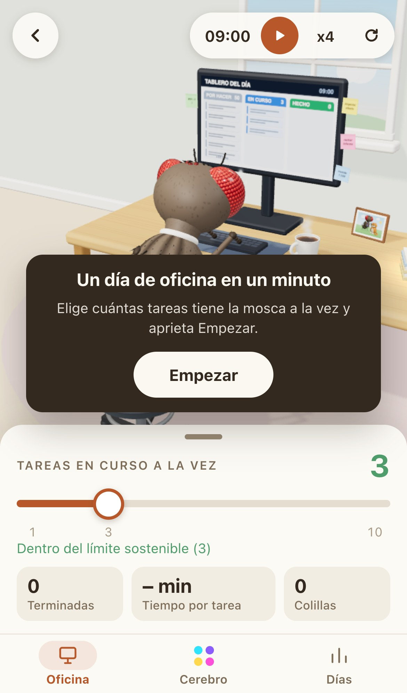
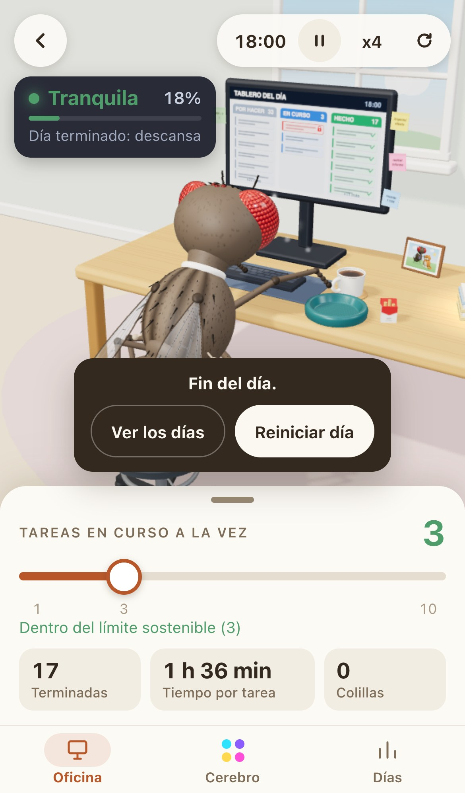

La sesión paso a paso, el canvas, el gráfico de la sala y el experimento de dos semanas. Para coaches, líderes y cualquiera que guíe una reunión.
Felipe Fernández · octubre 2026 · versión 1
mosca.deliverycraft.ai Se puede usar y adaptar · CC BY 4.0
Antes de empezar
Una hora, un juego y tres cosas escritas
En sesenta minutos tu equipo juega con la Mosca del WIP, mira sus propios resultados en la pared y decide cuántas cosas va a tener abiertas a la vez desde mañana. Esta guía es el guion completo: qué haces, qué dices y qué muestras en cada minuto.
Para qué sirve
Para que un equipo descubra, con sus manos, qué pasa cuando abre muchas cosas a la vez, y salga con un límite propio en vez de con una charla. El juego pone el tema sobre la mesa en un minuto. Lo que vale está en los últimos treinta minutos, cuando el equipo trabaja sobre su caso real.
Qué se lleva el equipo
Su límite de trabajo en curso, escrito y acordado.
Su regla para cuando algo queda esperando.
Un experimento de dos semanas para medirlo, con fecha de revisión.
Para quién es
Equipos de 5 a 6 personas, equipos de 10 a 12 y grupos de líderes de 5 a 6. Presencial o remoto. Hay un plan B sin internet y sin proyector (página 12). Si solo tienes esta guía impresa, alcanza. La presentación es un apoyo.
El día anterior
Juega dos días en tu celular, uno con 2 tareas a la vez y otro con 9, para saber dónde está cada cosa y poder contestar lo que te pregunten.
Imprime el canvas, el gráfico de la sala y la tabla del experimento, o deja el gráfico dibujado en la pizarra.
Cuenta cuántas parejas vas a tener y elige el reparto de límites de la ronda 2 (página 5).
Si hay proyector, abre la presentación y prueba el QR de la lámina 3 con tu propio celular.
Qué necesitas
Un celular con internet por pareja, con el juego abierto en mosca.deliverycraft.ai/jugar/ (hay un QR en la lámina 3 y en la página 16).
Una pizarra o un papelógrafo, post-its y plumones.
El canvas impreso (página 13), uno por equipo, o copiado a una pizarra digital.
El gráfico de la sala impreso en grande o dibujado en la pizarra (página 14).
La tabla del experimento (página 15), una copia por equipo.
Opcionales: proyector y la presentación de apoyo, 14 láminas.
Cómo usar la guía
Las páginas 4 a 9 son el guion, minuto a minuto. Las frases entre comillas están para decirlas tal cual o con tus palabras. Los avisos con la barra naranja dicen qué hacer si algo sale mal. Léela entera una vez antes de facilitar.
Un dato para calcular los tiempos: un día del juego dura un minuto a velocidad normal y 15 segundos a velocidad x4 (medido en el juego).
¿Cuántas cosas a la vez? · Guía para facilitar
La sesión en una página
Sesenta minutos en cuatro partes
La sesión sigue la estructura 4C de Sharon Bowman: primero conectar con lo que la gente ya sabe, después los conceptos, luego la práctica con su caso real y al final una conclusión que se lleva escrita.
El equipo sale con tres cosas escritas: su límite, su regla para cuando algo queda esperando y un experimento de dos semanas para medirlo. Si sale solo con “qué entretenida la mosca”, la sesión falló.
Parte
Minutos
Qué pasa
Qué necesitas
1Conexión
150:00 a 0:15
Cada persona anota en un post-it cuántas cosas tiene empezadas y sin terminar. El juego se explica en un minuto. Cada pareja apuesta con qué límite termina más la mosca. Dos rondas en el celular y los resultados van al gráfico de la sala.
post-its, celulares, el gráfico de la sala, láminas 2 a 5
2Conceptos
150:15 a 0:30
Cuatro ideas, siempre con el gráfico del grupo a la vista: qué es el WIP y qué es un límite, estar ocupado no es lo mismo que avanzar, el límite depende de las esperas, lo empezado no desaparece. Cada una con una pregunta para la sala.
láminas 6 a 10, o las páginas 3 y 4 del informe
3Práctica
200:30 a 0:50
El equipo llena el canvas con su caso real: cuántas cosas abiertas, cuántas esperando, su límite inicial, su regla cuando algo espera y hasta cuándo lo prueba.
el canvas, los post-its del inicio, lámina 11
4Conclusión
100:50 a 1:00
Cada uno dice en voz alta su límite y su regla. Se repite la apuesta. Foto del canvas, la revisión se agenda ahí mismo y el QR al informe para quien quiera profundizar.
láminas 12 a 14, un celular para la foto
despuésEl experimento
2semanas
Entra en lo que el equipo ya hace: el límite escrito en el tablero, un conteo de diez segundos en la reunión diaria, una fecha al empezar cada cosa y los días que tardó al terminarla. Se decide en la revisión de cada dos semanas (página 10).
la tabla del experimento (página 15)
Las cuatro partes vienen de Sharon L. Bowman, Training from the BACK of the Room! 65 Ways to Step Aside and Let Them Learn (Pfeiffer, 2009): Connections, Concepts, Concrete Practice y Conclusions. El reloj es apretado a propósito. Si te atrasas, recorta la segunda ronda del juego o una de las ideas, nunca la práctica.
¿Cuántas cosas a la vez? · Guía para facilitar
Conexión · 15 minutos · primera parte
La pregunta, el juego en un minuto y la apuesta
Los primeros seis minutos conectan el tema con la vida real de cada persona y dejan tomada la medición “antes”. Habla poco. Las preguntas hacen el trabajo.
−10min antes
Antes de que lleguen
Qué hacesPega el gráfico de la sala en la pared, con una zona libre al lado que diga “Apuesta”. Deja post-its y un plumón en cada puesto. Si hay proyector, abre la presentación en la lámina 1 y el juego en tu computador, por si algún celular falla. Pon un reloj a la vista.
0:003 min
La pregunta poderosa
Qué hacesReparte un post-it y un plumón a cada persona. Cada una escribe un número y se lo guarda. No se comparte todavía: se usa en la práctica.
Qué dices¿Cuántas cosas tienes empezadas y sin terminar hoy? Cuenta todo: tareas, correos que debes, cosas que esperan tu respuesta, lo que empezaste la semana pasada y sigue abierto. Escribe el número y guárdalo.
Qué muestrasLámina 2. Sin proyector, dila en voz alta y escríbela en la pizarra.
0:031 min
El juego en un minuto
Qué hacesExplica solo lo que hace falta para jugar. Lo demás sale solo cuando jueguen.
Qué dicesEsta mosca trabaja en una oficina con un tablero de tres columnas: por hacer, en curso, hecho. El control de abajo dice cuántas tareas puede tener empezadas a la vez, de 1 a 10. La misión es que termine lo más posible antes de las seis de la tarde. Un día de oficina dura un minuto.
Qué muestrasLámina 3, con el QR al juego. Deja la lámina puesta mientras juegan.
0:042 min
La apuesta
Qué hacesArma las parejas. Cada pareja escribe en un post-it el número con el que cree que la mosca termina más tareas en el día, de 1 a 10, y lo pega en la pizarra, en una zona aparte que diga “Apuesta”. Esta es la medición “antes”. Se repite al final (página 9).
Qué dicesAntes de jugar, apuesten. ¿Con cuántas tareas a la vez creen que la mosca termina más en el día? Un número por pareja. Nadie pierde nada, es para comparar después.
Qué muestrasLámina 4.
Si algo sale malSi una pareja dice “depende”, pide un número igual: la gracia es compararlo después con lo que vieron.
¿Cuántas cosas a la vez? · Guía para facilitar
Conexión · 15 minutos · segunda parte
Dos rondas en el celular y el gráfico en la pared
Cada pareja juega dos días con el celular. En la primera ronda eligen su límite. En la segunda tú repartes los límites para cubrir del 1 al 10. Todo termina pegado en el gráfico de la sala.
1En la hoja de abajo, mueve “Tareas en curso a la vez” hasta tu límite. Después aprieta Empezar.

2Toca “x1” arriba a la derecha dos veces hasta que diga “x4”. Así el día dura 15 segundos.

3A las 18:00 se detiene solo. Lee “Terminadas” en la tarjeta de abajo. Para otro día, toca “Reiniciar día”.
0:064 min
Ronda 1: cada pareja elige su límite
Qué hacesCada pareja abre el juego con el QR de la lámina 3, elige el límite que quiera y juega un día a x4. Al terminar anota en un post-it el límite y las terminadas. Pasa por las mesas: la duda más común es dónde está el control y cómo subir la velocidad.
Qué dicesElijan su límite, pongan x4 y aprieten Empezar. Cuando llegue a las seis, anoten cuántas terminó. Un post-it por día: el límite y las terminadas.
0:103 min
Ronda 2: tú repartes los límites
Qué hacesAsigna a cada pareja un número, de modo que entre las dos rondas queden cubiertos el 1 y el 10 y varios del medio. Si una pareja ya jugó con 2, no le repitas el 2.
Parejas en la sala
Límites para la ronda 2
3 parejas
1 · 5 · 10 (y pide que en la ronda 1 nadie repita)
4 o 5 parejas
1 · 3 · 6 · 8 · 10
6 parejas
1 · 2 · 4 · 6 · 8 · 10
0:132 min
El gráfico en la pared
Qué hacesCada pareja pega sus dos post-its en el gráfico de la sala (página 14): el número de tareas a la vez va en la línea de abajo y las terminadas, en la altura. Deja que lo miren un momento antes de decir nada.
Qué dicesMiren la forma. ¿Dónde está lo más alto? ¿Qué pasa hacia la derecha? ¿Alguien quedó sorprendido con su apuesta?
Qué muestrasLámina 5 mientras juegan. La lámina 6 viene después, con los conceptos.
Si algo sale malUn resultado raro sirve. Si con 8 alguien terminó más que con 3, dilo tal cual: Un día no prueba nada. Por eso el promedio del juego sale de 200 días, y por eso el experimento de ustedes dura dos semanas.
¿Cuántas cosas a la vez? · Guía para facilitar
Conceptos · 15 minutos · primera parte
Cuatro ideas con el gráfico del grupo a la vista
El riesgo de esta parte es dar una clase. Cada idea cabe en tres o cuatro minutos: qué muestras, qué dices y una pregunta para la sala. Todos los números del juego son el promedio de 200 días jugados con cada límite, con la mosca sola.
Qué es el WIP y qué es un límite 0:15 · 3 min
Qué muestrasEl gráfico de la sala y la lámina 6, que pone al lado la curva del juego: 18 terminadas con 2 tareas a la vez, 9 con 9.
Qué dicesWIP es la sigla en inglés de trabajo en curso: todo lo que ya empezaste y todavía no terminas. Un límite de WIP es un número, cuántas cosas pueden estar empezadas al mismo tiempo. Cuando se llega al número, no se empieza otra hasta terminar una. Eso es lo que ustedes le pusieron a la mosca con el control.
Comparen su gráfico con el del juego. En el juego, con 2 tareas a la vez la mosca termina 18 en el día y con 9 termina la mitad, aunque está ocupada todo el día.
Pregunta para la sala¿Al número de qué pareja se parece más su trabajo de verdad?
Qué muestrasLa lámina 7 tiene la definición, por si el grupo no ha oído la palabra WIP.
Estar ocupado no es lo mismo que avanzar 0:18 · 4 min
Qué muestrasLámina 8: dos formas de medir el mismo día.
Qué dicesHay dos formas de mirar un día de trabajo. Una mira a la persona: cuánto de su hora estuvo ocupada. La otra mira a la tarea: cuánto de su vida avanzó y cuánto esperó. En el juego, con 9 tareas a la vez la mosca está ocupada todo el día y cada tarea avanza el 9 por ciento de su tiempo. El resto espera. Con 2 a la vez, cada tarea avanza el 47 por ciento de su tiempo y tarda una hora en vez de casi nueve.
Con 9 cosas abiertas la mosca no está floja. Está ocupadísima. Pero el trabajo pasa más tiempo esperando que avanzando.
Pregunta para la salaPiensen en la última cosa que terminaron. De todo el tiempo que estuvo abierta, ¿cuánto fue trabajo y cuánto fue espera?
Los números del juego, por si no tienes la lámina 6 a mano. Promedio de 200 días por cada límite, con la mosca sola. Es la misma tabla de la página 4 del informe.
Tareas a la vez
1
2
3
4
5
6
7
8
9
10
Terminadas en el día
15,9
18,0
16,9
15,4
14,0
12,3
11,2
10,0
9,1
8,2
Tiempo por tarea
34 min
1 h
1 h 36
2 h 20
3 h 14
4 h 24
5 h 40
7 h 11
8 h 54
10 h 34
Cuánto de su tiempo avanza cada tarea
73 %
47 %
33 %
24 %
19 %
15 %
13 %
10 %
9 %
8 %
¿Cuántas cosas a la vez? · Guía para facilitar
Conceptos · 15 minutos · segunda parte
Las esperas mandan y lo empezado no desaparece
Las dos ideas que más sirven para la práctica. La primera explica por qué el número no es uno. La segunda prepara al equipo para la primera semana del experimento, que se siente lenta.
El límite depende de las esperas 0:22 · 4 min
Qué muestrasLámina 9.
Qué dicesEn el juego, una de cada cinco tareas se traba entre 30 y 60 minutos: la mosca necesita algo de otra persona y espera. Por eso tener solo una cosa abierta no es lo mejor para ella. En la simulación, con esas esperas el mejor límite está entre 2 y 4 en 16 de los 17 casos que se probaron. Sin ninguna espera, el mejor límite es 1.
De ahí sale la regla que más sirve: reducir las esperas permite bajar el límite. Subir el límite no reduce las esperas. Cuando alguien queda esperando y abre otra cosa para aprovechar el tiempo, la espera sigue ahí, y ahora hay una cosa más abierta.
Pregunta para la sala¿Dónde esperan más sus tareas? ¿A quién o a qué?
Lo empezado no desaparece 0:26 · 3 min
Qué muestrasLámina 10: la curva de bajar el límite a mitad del día.
Qué dicesEn la simulación, si a las 12 del día la mosca baja el límite de 10 a 2, no pasa nada de inmediato. Sigue con 10 cosas abiertas hasta que termina 8. Recién a las 2 y 35 de la tarde queda con 2, y a las 3 y 7 vuelve a estar tranquila. El cambio tarda más de dos horas en notarse.
En un equipo pasa lo mismo. La primera semana con un límite se siente más lenta, porque primero hay que terminar lo que ya estaba empezado. Eso no es que el límite falle. Es que lo empezado no desaparece.
Pregunta para la salaSi mañana ponen un límite, ¿cuántos días tardarían en bajar hasta él?
0:291 min
El cierre de los conceptos
Qué dicesDos frases para llevarse. Estar siempre ocupado no es lo mismo que avanzar. Y la meta no es una cosa a la vez: es un límite sostenible para ustedes, con las esperas que tienen hoy.
Si algo sale malSi alguien pregunta por el número correcto, no lo des. La respuesta está en la página 11 y, sobre todo, en los veinte minutos que vienen.
¿Cuántas cosas a la vez? · Guía para facilitar
Práctica · 20 minutos
El canvas “Nuestro límite” con su caso real
Aquí se decide si la sesión sirvió. El equipo deja la mosca y trabaja sobre su propio trabajo abierto, con los post-its del inicio y el canvas de la página 13. Tú guías y preguntas, no propones el número.
0:303 min
Lo que hay abierto hoy
Qué hacesCada persona saca el post-it del inicio. Se suman y el total va en la primera línea del canvas. Vale todo lo que ya empezó y no terminó.
Qué dicesSaquen el post-it. Sumen. Ese número es lo que el equipo tiene empezado y sin terminar hoy. Escríbanlo tal cual, sin arreglarlo.
Qué muestrasLámina 11, el canvas, mientras dura toda la práctica.
0:334 min
Lo que está esperando
Qué hacesDe ese total, cuántas cosas están esperando a otra persona o a otro equipo, y dónde esperan más. Esto es lo que alimenta la regla del paso 4.
Qué dicesDe esas cosas, ¿cuántas no avanzan porque esperan a alguien? ¿Y cuál es la espera que más se repite?
0:375 min
El límite inicial
Qué hacesEl equipo elige un número para empezar. Dilo así: la simulación es de una mosca sola y no da un número para equipos. Para un equipo, el punto de partida es lo que tienen abierto hoy, un poco menos, y bajarlo de a poco con datos. Para una persona sola, la simulación sí da un punto de partida: 1 o 2 si casi nada espera, 2 si algo espera y 3 si mucho espera.
Qué dicesNo busquen el número perfecto. Busquen uno que puedan sostener dos semanas, un poco por debajo de lo que tienen hoy. Después lo bajan con sus datos.
0:424 min
La regla cuando algo queda esperando
Qué hacesCompletan la frase del canvas: en vez de empezar otra cosa, vamos a… ayudar a destrabar lo que espera, pedir ayuda, terminar algo ya empezado. Una regla concreta, no un deseo.
Qué dicesCuando lleguen al límite y lo suyo esté esperando, ¿qué van a hacer en vez de abrir otra cosa? Escríbanlo como una acción.
0:464 min
El experimento
Qué hacesHasta qué fecha lo prueban y en qué reunión lo revisan. Lo normal es dos semanas y la revisión que ya tienen. Entrégales la tabla de la página 15 y muestra la lámina 12.
Según el grupo5 a 6 personas: un solo canvas. 10 a 12: dos o tres subgrupos proponen un límite cada uno y el equipo elige uno. Si empatan, gana el más bajo. Líderes: su trabajo abierto son los proyectos o iniciativas del área, no tareas, y la mosca es una analogía que conviene presentar como tal. Su experimento dura cuatro semanas o hasta la próxima revisión mensual. Muchas veces la sobrecarga de los equipos nace en ese nivel, y vale la pena decirlo.
¿Cuántas cosas a la vez? · Guía para facilitar
Conclusión · 10 minutos
La cosecha, la apuesta de nuevo y la foto
Diez minutos para que lo escrito salga de la sala en voz alta y con fecha. La segunda apuesta es la medición “después”: cuántos cambiaron de opinión después de jugar.
0:504 min
La cosecha
Qué hacesUna ronda rápida. Cada persona completa la frase de la lámina 13 en voz alta. En equipos grandes, una persona por subgrupo.
Qué dicesNuestro límite es… y cuando algo espere vamos a… Una frase por persona, sin explicar.
Qué muestrasLámina 13.
0:542 min
La apuesta, otra vez
Qué hacesRepite la pregunta del inicio. Cada pareja escribe de nuevo con qué límite cree que la mosca termina más y lo pega al lado de su primer post-it. Cuenta en voz alta cuántas parejas cambiaron su número. Ese es el “antes y después” de la sesión.
Qué dicesMisma pregunta de hace una hora: ¿con cuántas tareas a la vez termina más la mosca? Péguenlo al lado de la primera apuesta.
0:562 min
La foto y la fecha
Qué hacesAlguien del equipo le saca una foto al canvas y la manda al grupo del equipo. La fecha de revisión se agenda ahí mismo, en el calendario, antes de que se paren.
Qué dicesFoto al canvas y la revisión al calendario ahora. Si sale de la sala sin fecha, no pasa.
0:582 min
El cierre
Qué dicesLo que probaron hoy es un juego con una mosca. Lo que vale es lo que escribieron: su límite, su regla y dos semanas de datos. Quien quiera saber de dónde sale cada número tiene el informe en el QR, se lee en diez minutos.
Qué muestrasLámina 14, con los QR al informe y al juego.
Si algo sale malSi se acabó el tiempo y el canvas está a medias, cierra igual con la cosecha y la fecha. Un límite escrito y una fecha valen más que un canvas perfecto sin fecha.
Para ti, al salir
Anota cuántas parejas cambiaron su apuesta y los números de las dos rondas. Sirven para abrir la revisión de dos semanas.
Confirma que la foto del canvas llegó al grupo del equipo y que la revisión quedó en el calendario con todos invitados.
Si quieres compartir los resultados de la apuesta, sin nombres, escríbeme por LinkedIn (página 16). Con eso se mejora la guía.
¿Cuántas cosas a la vez? · Guía para facilitar
Después del taller
El experimento: dos semanas dentro de lo que ya hacen
El experimento no agrega reuniones. Usa el tablero que el equipo ya tiene, su reunión diaria y su revisión de cada dos semanas. Cuatro semanas si son líderes y su trabajo son proyectos.
Qué hace el equipo
Escribe el límite en la columna “En curso” del tablero, a la vista de todos.
En la reunión diaria cuenta cuántas cosas hay abiertas. Son diez segundos. El número va en la tabla de la página 15.
Al empezar algo, le anota la fecha. Al terminarlo, anota cuántos días tardó.
Cuando algo queda esperando, aplica la regla del canvas y anota a quién esperó.
Lo revisa en su revisión de cada dos semanas, con la tabla sobre la mesa.
Qué esperar
La primera semana puede sentirse más lenta, porque primero se termina lo que ya estaba empezado. En la simulación, bajar el límite de 10 a 2 a mediodía tarda dos horas y media en volver a 2 cosas abiertas, y tres en que la mosca se calme. En un equipo son días. Si a la segunda semana las cosas empiezan a tardar menos en salir, el límite está trabajando.
Las preguntas para la revisión
¿Cuántos días pasamos el límite, y por qué cada vez?
¿Cuántos días tardó cada cosa en salir, comparado con las dos semanas anteriores?
Cuando algo quedó esperando, ¿qué hicimos de verdad: ayudamos a destrabar, pedimos ayuda, terminamos otra cosa, o abrimos una nueva?
¿Qué espera se repitió más, y qué podemos hacer con ella la próxima vez?
La decisión: mantener, bajar o subir
Si el límite se pasó muchas veces por razones reales, como urgencias que entraron, súbanlo en uno y anoten las razones. Si nunca se llegó al límite, bájenlo en uno. Si se cumplió y las cosas tardaron menos, manténganlo dos semanas más y después prueben uno menos. La idea es bajarlo de a poco con datos, no de golpe.
Lo que se mide sale del informe: cuántas cosas se terminan, cuánto tarda cada una, cuánto hay abierto y cuánto espera. Limitar el trabajo en curso es uno de los hábitos de los equipos de alto desempeño, según la encuesta de DORA, y ayuda sobre todo con un tablero visible.
¿Cuántas cosas a la vez? · Guía para facilitar
Para cuando te pregunten
Siete preguntas difíciles, con respuesta corta
Las respuestas sobre hechos salen del informe y llevan su origen. Las de práctica son sugerencias: ajústalas a tu grupo.
¿Esto es real?
Las neuronas y sus conexiones sí: vienen del Male CNS v1.0, el mapa completo del sistema nervioso central de una mosca, con licencia abierta. La actividad que se ve es simulada. Que cada tarea tarde más cuando hay más cosas abiertas tiene respaldo en estudios con personas. Que suba el estrés es un supuesto del juego. El informe dice de dónde sale cada número. Informe, páginas 8 y 10
¿Cuál es el número correcto?
No hay uno. En la simulación, con las esperas del juego, el mejor límite está entre 2 y 4, y sin esperas es 1. Pero la mosca trabaja sola. Para un equipo, el número se mide: parte un poco por debajo de lo que tienen abierto hoy y bájalo con los datos del experimento. Simulación · sugerencia
Mi jefe me asigna todo
El límite no dice cuánto te asignan. Dice cuánto tienes empezado a la vez. Lo demás espera en “por hacer”, a la vista. Si alguien quiere que algo entre ya, la pregunta es qué sale. Esa conversación es parte del experimento, y por eso conviene que los líderes hagan este mismo taller con sus proyectos. Sugerencia
¿Y las urgencias?
Entran. Pero una urgencia que entra cuando estás en el límite significa que algo se pausa, y eso se anota en la tabla. Si cada día entran tres urgencias, el problema que hay que mirar en la revisión no es el límite. Sugerencia
Con un límite voy a quedar sin hacer nada
Cuando llegues al límite y lo tuyo esté esperando, la regla del canvas dice qué hacer: destrabar, pedir ayuda o terminar algo empezado. En el juego, con 2 tareas a la vez la mosca se queda sin qué hacer el 4 por ciento del día y termina el doble que con 9. Con 1 a la vez se queda parada una cuarta parte del día y aun así termina 15,9, mucho más que con 9. Juego, promedio de 200 días
Nuestro trabajo es muy distinto
Seguro. El juego no es tu equipo: es una mosca sola y un día. Lo que se repite en los estudios con personas, jueces en Milán, reclutadores y equipos de investigación, es que pasado cierto punto más cosas abiertas a la vez significa que cada una tarda más y se termina menos. Cuánto, en su caso, lo mide el experimento. Informe, página 8
¿Por qué una mosca que fuma?
Las moscas no fuman. El cigarro es un disfraz de algo que sí hacen, limpiarse las antenas. En el juego, las tareas le llegan como polvo en la antena, su cerebro enciende el circuito de limpieza y eso se dibuja como salir a fumar, ocho minutos sin trabajar cada vez. Y una mosca, porque es uno de los pocos animales con el mapa completo de su sistema nervioso central: 166.700 neuronas. Informe, páginas 9 y 10
¿Cuántas cosas a la vez? · Guía para facilitar
Cuando algo falta
Plan B sin internet ni proyector, y la versión remota
La sesión aguanta sin celulares, sin proyector y a distancia. Lo que no se negocia es la práctica con el caso real y la fecha de revisión.
Sin celulares o sin internet en la sala
Se juega con una sola mosca, desde tu computador, proyectada o en la pantalla más grande que haya. Abre el juego antes de entrar a la sala y aprieta la tecla E para la vista Exhibición, que muestra el juego en grande. El grupo vota el límite de cada ronda, por ejemplo 2, 5 y 9, a velocidad x4 son 15 segundos por día. Esos tres puntos van al gráfico de la sala. La apuesta se hace igual.
Sin proyector
Imprime las páginas 3 y 4 del informe para compartir: los dos días de la mosca, con 2 y con 9 tareas, y la tabla de 1 a 10 con lo que termina con cada límite. Con eso se llena el gráfico de la sala. Se pierde la sorpresa de jugar y se gana tiempo para la práctica.
Sin nada
Con esta guía, post-its y una pizarra alcanza. Cuenta el día de la mosca con tus palabras, usa los números de la tabla de la página 4 del informe y pasa a la práctica a los diez minutos.
Remoto
El canvas va en una pizarra digital, en Miro, FigJam, Mural o la que usen, o en un documento compartido. Copia el cuadro de la página 13, que es uno solo.
Las parejas juegan en salas pequeñas, ocho minutos para las dos rondas, cada una con el juego abierto en su propio computador o celular.
El gráfico de la sala es un cuadro en la pizarra digital: cada pareja pone un punto o una nota con su límite y sus terminadas.
La apuesta se hace con cámaras encendidas y una nota por pareja en la pizarra, antes y después.
Tú compartes la pantalla con la presentación. La cosecha se hace en la sala principal, una persona por vez.
El reloj
Pon un reloj a la vista desde el minuto cero. Si vas atrasado, recorta en este orden: la ronda 2 del juego, la idea “lo empezado no desaparece” y la segunda apuesta. La práctica y la fecha de revisión no se recortan.
Si solo tienes 30 minutos
La pregunta en el post-it, 2 minutos.
La apuesta y el juego proyectado desde tu computador, un día con 2 y otro con 9 a x4, 6 minutos.
Una sola idea, estar ocupado no es lo mismo que avanzar, con el gráfico del juego, 5 minutos.
El canvas solo con los puntos 1, 3 y 5, 12 minutos.
La cosecha y la fecha de revisión, 5 minutos. El experimento es el mismo.
¿Cuántas cosas a la vez? · Guía para facilitar
Para imprimir · uno por equipo
Nuestro límite
EquipoFecha
1
Hoy tenemos cosas empezadas y sin terminar.
La suma de los post-its de cada persona, tal cual.
2
De esas, están esperando a otra persona o a otro equipo. Dónde esperan más:
3
Nuestro límite inicial:
Un poco por debajo de lo que tienen abierto hoy, y después se baja con datos. La simulación es de una mosca sola y no da un número para equipos.
4
Nuestra regla cuando algo queda esperando: en vez de empezar otra cosa, vamos a
Por ejemplo: ayudar a destrabar lo que espera, pedir ayuda, terminar algo ya empezado.
5
Nuestro experimento: lo probamos hasta el y lo revisamos en
Dos semanas y la revisión que ya tienen. Cuatro semanas si son líderes y su trabajo son proyectos.
NombresFoto al grupo del equipo y la revisión al calendario, antes de salir de la sala.
Este cuadro se puede copiar tal cual a una pizarra digital. Es parte del taller “¿Cuántas cosas a la vez?”, de Felipe Fernández, mosca.deliverycraft.ai, licencia CC BY 4.0.
¿Cuántas cosas a la vez? · Guía para facilitar
Para imprimir en grande, o dibujar en la pizarra
El gráfico de la sala
Cada pareja pega su post-it sobre su número de tareas a la vez, a la altura de las terminadas. Dos post-its por pareja, uno por ronda.
En el juego, el promedio de 200 días por cada límite es 18 terminadas con 2 tareas a la vez y 9 con 9. Compáralo con la lámina 6 después de que el grupo haya mirado su propio gráfico.
¿Cuántas cosas a la vez? · Guía para facilitar
Para imprimir · una por equipo · dos semanas
La tabla del experimento
Diez segundos en la reunión diaria: cuántas cosas hay abiertas, cuántas se terminaron hoy y si algo quedó esperando. Nuestro límite:
Día
Abiertas hoy
Terminadas hoy
¿Algo esperó? A quién
Nota
Semana 1
Lunes
Martes
Miércoles
Jueves
Viernes
Total
Semana 2
Lunes
Martes
Miércoles
Jueves
Viernes
Total
Decisión en la revisión
Mantener Bajar a Subir a
Por qué:
Al empezar cada cosa anótenle la fecha en el tablero y, al terminarla, cuántos días tardó. Para líderes con un experimento de cuatro semanas, dos copias de esta tabla.
¿Cuántas cosas a la vez? · Guía para facilitar
Para saber más
El juego, el informe y los créditos
Todo lo que usa este taller es gratis y está en el sitio. El juego no pide registro y no usa cookies.
El juego
Un día de oficina en un minuto. Se juega en el computador, el celular o la tablet. Gratis y sin registro.
mosca.deliverycraft.ai/jugar/
El informe
De dónde sale cada número, los estudios con personas y cuatro pasos para probar un límite. Se lee en diez minutos.
mosca.deliverycraft.ai, botón “Descargar el informe”
La estructura del taller
Las cuatro partes, Conexión, Conceptos, Práctica concreta y Conclusiones, vienen de Sharon L. Bowman, Training from the BACK of the Room! 65 Ways to Step Aside and Let Them Learn (Pfeiffer, 2009).
Los números
Todos los números del juego son el promedio de 200 días jugados por cada límite, con la misma mosca y las mismas reglas (semilla 2024). Las reglas se basan en estudios y están en el informe, con lo que es evidencia y lo que es supuesto nuestro. El juego no mide personas ni equipos: el número de tu equipo lo mide tu equipo.
El cerebro
Las neuronas que se encienden en el juego vienen del Male CNS v1.0, el mapa completo del sistema nervioso central de una mosca macho, hecho por FlyEM (HHMI Janelia), la Universidad de Cambridge, el MRC Laboratory of Molecular Biology y Google Research, con licencia CC BY 4.0. La actividad que se ve es simulada.
Licencia y autor
Esta guía, la presentación y el canvas son de Felipe Fernández y tienen licencia CC BY 4.0. Puedes usar y adaptar este taller, también en talleres pagados, citando a Felipe Fernández (mosca.deliverycraft.ai).
Si facilitas el taller y quieres compartir los resultados de la apuesta, sin nombres, escríbeme por LinkedIn: linkedin.com/in/felipefernandezandrade. Con eso se mejora la guía.
Versión 1, 26 de octubre de 2026. Primera versión, antes del piloto.